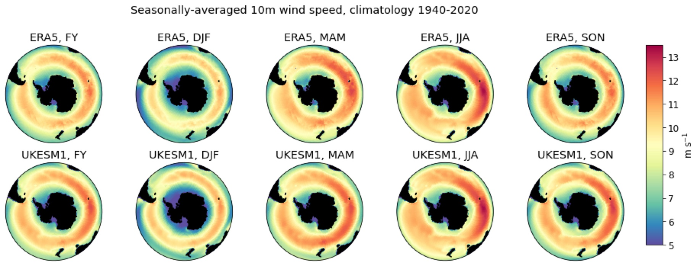
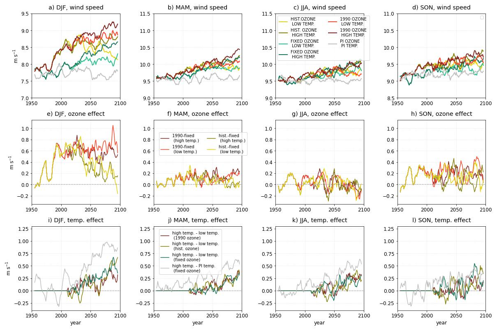
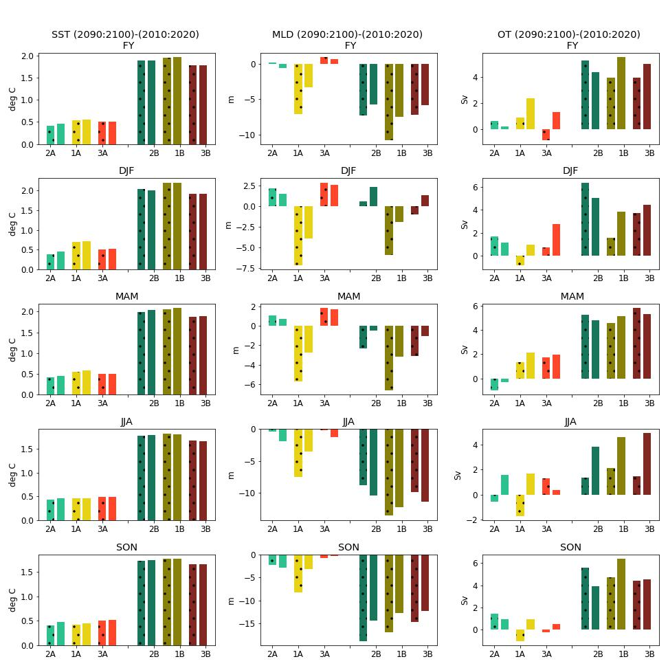

class: center, middle .title[Figures for wind+ paper] <!-- .subtitle[] --> .author[Tereza Jarníková$^{1}$, Corinne Le Quéré$^{1}$, Steven Rumbold$^{2}$, Colin Jones$^{3}$] <br/> <br/> <br/><br/> <!-- url of slides for accessibility: <br/><br/> https://tjarnikova.github.io/pres/2022SEP_CHALLENGER.html --> --- name: background class: center <br/> #MF1-map <br/> <br/><br/> .date[] --- name: background class: center <br/> #MF-hovmoller <br/> <br/><br/> .date[] --- name: background class: center <br/> #MF-historical lat shifts <img style="width: 80%" src="./FIGS_ORGANIZED/paperJPG/MF-lat-hist.jpg"><br/> <br/><br/> .date[] --- name: background class: center <br/> #MF-wind lines <br/> <br/><br/> .date[] --- name: background class: center <br/> #MF-lat-future <br/> <br/><br/> .date[] --- name: background class: center #MF-timeseries <br/> <br/><br/> .date[] --- name: background class: center <br/> #MF-bargraph <!-- <img style="width: 40%" src="./figs_2022_JUL_CELOS/NASA_and_NOAA_Announce_Ozone_Hole_is_a_Double_Record_Breaker.png"><br/> .note[South Pole O$_3$ concentration, September 2006, NASA] <br/><br/> --> .left-column[<br/> .note[]] .right-column[<br/> .note[]] <br/><br/><br/><br/><br/><br/><br/><br/><br/><br/><br/><br/><br/><br/><br/><br/><br/> .date[] ---